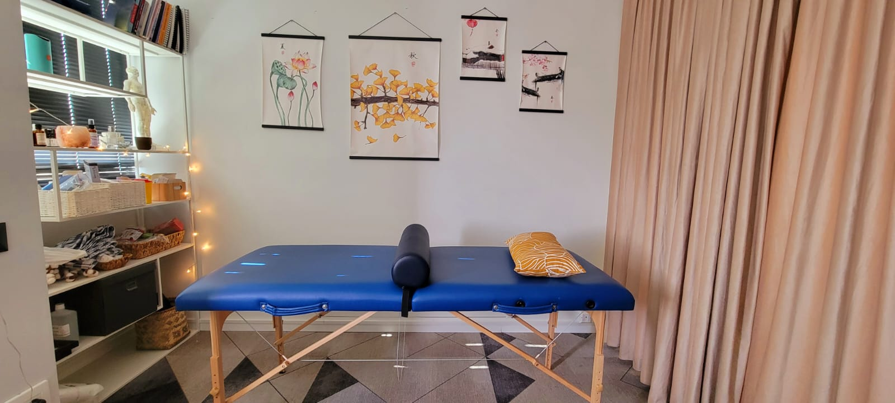

מירי קליין
רפואה סינית לאיזון ולצמיחה
מירי קליין רפואה סינית לאיזון ולצמיחה
רפואה סינית מסורתית היא שיטה עתיקה לריפוי ושמירה על בריאות טובה.
ברפואה סינית מסורתית משתלבים בהרמוניה תפקודים פיזיים של איברים ומערכות הגוף עם עקרונות פילוסופיים
, התבוננות פנימית עם השפעות קוסמיות, גוף עם נפש.
